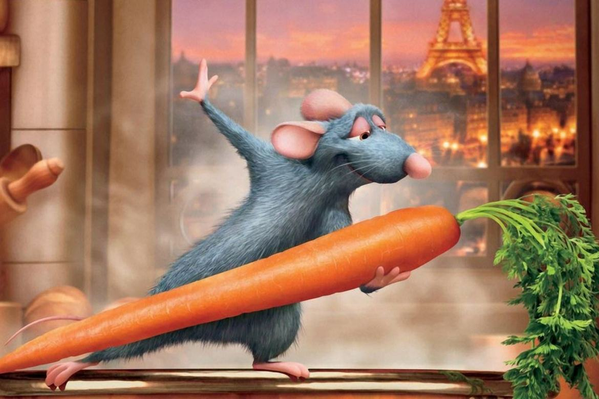
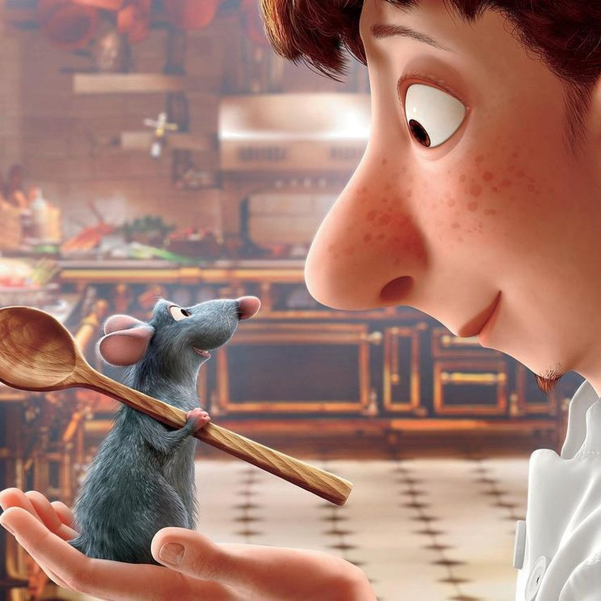

A trama de Ratatouille é muito simples: um ratinho, cinza, feio e peludo, está cansado de viver no lixo e sonha em ir para Paris e descobrir todos os sabores existentes no lugar com a melhor culinária do mundo! Bem ou mal ele acaba chegando lá, formando por acaso parceria com um aprendiz de cozinha desastrado. Tudo o que o rato sabe, o garoto desconhece. Juntos, porém, acabam fazendo fama e devolvendo o restaurante em que atuam a antiga popularidade. Outros elementos, como a saudade e lealdade perante à família (o pai, o irmão e os demais amigos acabam ficando para trás quando o protagonista decide virar cozinheiro), honestidade (quem é o verdadeiro dono do negócio?) e até crítica (culinária e, por quê não afirmar, artística em geral) são debatidos em cena. Ganha, com esta diversidade, o espectador adulto. Por outro lado, os mais baixinhos talvez se cansem um pouco.

A trama de Ratatouille é muito simples: um ratinho, cinza, feio e peludo, está cansado de viver no lixo e sonha em ir para Paris e descobrir todos os sabores existentes no lugar com a melhor culinária do mundo! Bem ou mal ele acaba chegando lá, formando por acaso parceria com um aprendiz de cozinha desastrado. Tudo o que o rato sabe, o garoto desconhece. Juntos, porém, acabam fazendo fama e devolvendo o restaurante em que atuam a antiga popularidade. Outros elementos, como a saudade e lealdade perante à família (o pai, o irmão e os demais amigos acabam ficando para trás quando o protagonista decide virar cozinheiro), honestidade (quem é o verdadeiro dono do negócio?) e até crítica (culinária e, por quê não afirmar, artística em geral) são debatidos em cena. Ganha, com esta diversidade, o espectador adulto. Por outro lado, os mais baixinhos talvez se cansem um pouco.
Essa produção da Pixar ao lado dos Estúdios Disney é menos movimentada que os filmes anteriores da casa, principalmente do que o primeiro longa do diretor - Os Incríveis, de 2004. Por outro lado, o desenvolvimento intelectual da história é mais fundamentado, deixando de lado reviravoltas previsíveis e personagens unidimensionais em favor de uma estrutura mais orgânica, dinâmica e consciente. As motivações são todas muito bem exploradas, nada é raso, e até o mais cego dos vilões tem suas razões justificadas. Neste meio tempo, sobra um olhar mais ácido em relação àqueles que deturpam à arte em nome de um "bem maior" e neste processo acabam esquecendo dos seus objetivos primordiais: entreter, educar e gerar prazer.

Entretanto, nem tudo é "ouro" em Ratatouille. Se os méritos da obra são diversos, há também alguns problemas estruturais difíceis de ignorar. E o mais básico de todos é evidente: como deixar de lado o fato de que se está falando de um rato invadindo a cozinha e tratando com alimentos? Mesmo atento a detalhes como "as mãos devem estar sempre limpas", é particularmente complicado quando presenciamos um exército de roedores preparando um banquete. As mensagens de que todo sonho é possível se acreditarmos o suficiente, de que unidos vamos mais longe e de que os valores éticos e morais se trazem de casa são muito bonitas, necessárias e pertinentes no contexto global em que vivemos, mas bem que aqueles que aqui a ilustram - e isso não é uma apologia ao politicamente correto, por favor! - poderiam ser mais, digamos, palatáveis!